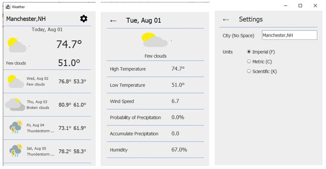
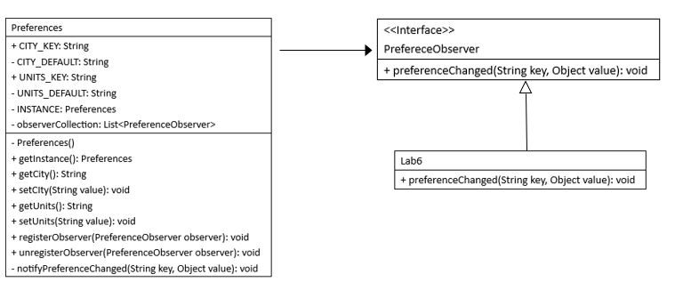

Lab6: Weather Forecast Part 2

- The left view (the main view) shows the 5-day forecast.
- The middle view shows the detailed forecast of the day clicked
on the main view.
- The right view shows the settings. You can change the city and
units.
Objectives
- Learn how to use and implement Observer Design Pattern.
- Introduce the Loose Coupling Principle.
Work
- Add java-json.jar in Lab_Files to Classpath of JRE System
Library for org.json.*.
- Update the API key in WeatherAPI.java.
-
- Review the Settings screen in the Design view of Lab6.java and
find how to change the view from the main screen to the settings screen.
- PreferenceObserver is defined as an interface. It is implemented by the Lab6 class, which overrides preferenceChanged().
- Complete the body of preferenceChanged() in the Lab6
class.
- The Preferences class is defined with the singleton design pattern
to make sure that there is only one instance of Preferences.
It includes registerObserver() to register an observer and
unregisterObserver() to unregister an observer.
- The Preferences class also defines notifyPreferenceChanged(), which is called by setCity() and setUnits().
- Complete the body of the notifyPreferenceChanged() method
in the Preferences class.

=== End of Lab6 ===